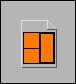

You have connected two strictly typed VI refnums whose connector pane patterns do not match.
In this example, the strictly typed VI refnum on the front panel does not match the connector pane pattern the Call By Reference node expects. However, because the Call By Reference node is already wired, it cannot adapt to the type of the refnum on the front panel.
To correct this error, change the connector pane pattern of the front panel VI refnum to match the Call By Reference node. To select from patterns you have previously used as strict types, right-click the front panel refnum, select Select VI Server Class»Strictly Typed VIs from the shortcut menu, and select a pattern.
To select the connector pane pattern of a saved VI, right-click the front panel refnum, and select Select VI Server Class»Browse from the shortcut menu. When the patterns of the two refnums match exactly, the wire appears as a solid wire.
In the previous example, you could remove the wires from the Call By Reference node and allow it to adapt to the connector pane pattern of the refnum control.
| Note This error also can occur for the Start Asynchronous Call node and the Wait On Asynchronous Call node. |